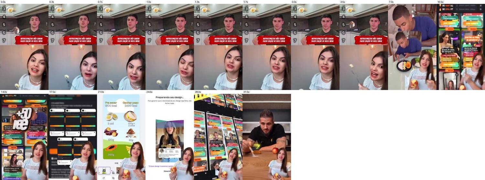
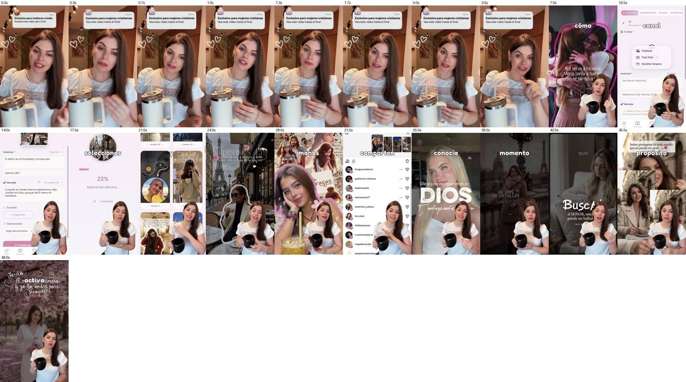
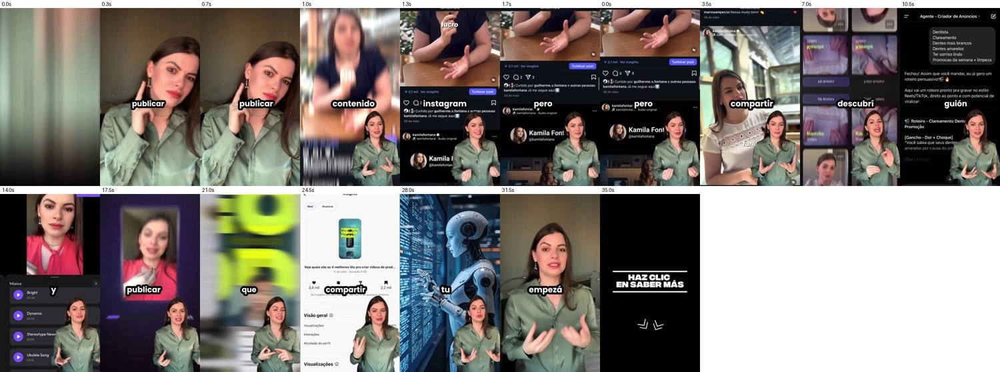
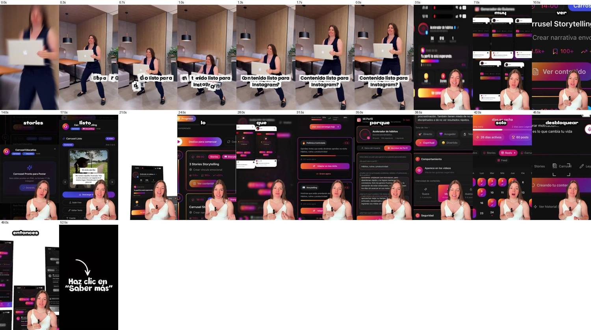
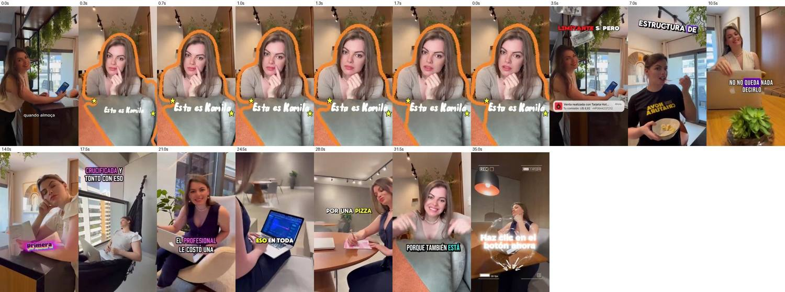
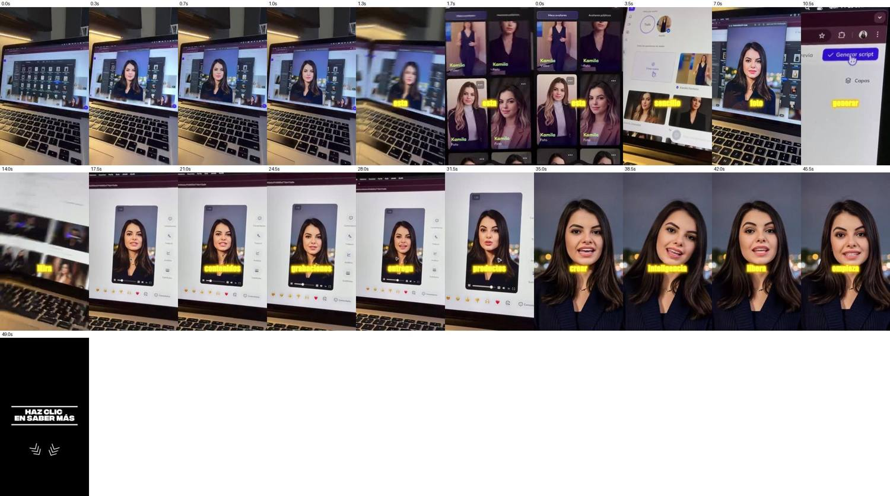

Versão 1 · 04/11/2026. Complemento do que já existe, sem repetir:
- Método e roteiro (6 etapas, ganchos, CTA, takes, PDF de gravação): skill lt-criativos-video e padroes-kamilla.md · processo 0-vissia/operacao/processos/criativos-video-low-ticket.md.
- Produto: Meu Roteiro que Vende (3-produtos/meu-roteiro-que-vende/): Engenharia do Minuto e as 6 Decisões do Desconhecido.
- Padrão ouro nosso: Anúncio Pronto (1-clientes/primeiro-cnpj/5-produtos/anuncio-pronto/criativo/), formato por takes aprovado em 01/11/2026.
O que este playbook acrescenta: o lado visual dos 11 anúncios reais da Kamila, que ainda não estava registrado: os formatos de tela, as aberturas, as legendas e o cartão final, as provas que aparecem na tela e o desmonte de cada vídeo com os quadros. Serve para escrever a coluna "Na edição" e o campo "quebra" dos takes, e para a /editar-criativo.
Vídeos: 4-conhecimento/cursos-e-sistemas/Low Ticket Kamilla/Criativos/ · Quadros: playbook/img/cv-*.jpg. Nota de ritmo: ela fala cerca de 3 palavras por segundo; no nosso formato o alvo aprovado segue 120 a 150 palavras para 50 a 60 s.
Playbook Criativos em Vídeo · versão 1 · 04/11/20262/14
Playbook Criativos em VídeoCriativos em vídeo
Os 5 formatos visuais (o que se vê na tela)
Formato
Como é
Vídeos
Quando usar
A. Pessoa recortada no canto
A pessoa, recortada com contorno colorido ou tracejado, ocupa o canto de baixo (cerca de 45% da tela), na frente de um fundo que troca a cada 3 s: exemplos do produto, telas do app, posts com curtidas
50VF 271, criativos 3, 4, 5, 6, 8, 10
O padrão. Produto que dá para mostrar (modelos, app, IA)
B. Tela dividida
Em cima, um exemplo do que o produto faz (um Reels viral) com faixa vermelha de texto; embaixo, a pessoa falando
50VF 272
Quando o exemplo é o argumento ("é esse formato que viraliza")
C. Personagem em 3ª pessoa
Várias cenas de vida (almoço, sofá, rede, notebook), roupas trocadas, recorte com nome ("Esta é Kamila"), notificação de venda, legenda de 2 linhas
Criativo 7
História de transformação de alguém real
D. Cabeça falante com texto 3D
A pessoa sentada falando direto; no começo um texto grande 3D ("Low Ticket") e uma notificação; depois tela em cima e pessoa embaixo
Criativo 9
Explicação, tutorial, autoridade
E. Tela pura
Filmagem da tela do computador ou do celular mostrando o produto funcionando; termina com o resultado
Criativo 11
Produto que se prova sozinho na tela (IA, gerador)
Em todos: corte ou troca de fundo a cada 3 a 4 segundos. Nada fica parado.
Playbook Criativos em Vídeo · versão 1 · 04/11/20263/14
Playbook Criativos em VídeoCriativos em vídeo
As aberturas (quebra de padrão): 11 jeitos que ela usa
Abertura
O que acontece nos 2 primeiros segundos
Vídeo
Transição com desfoque
Um "whoosh" borrado vira a cena; a pessoa recortada já falando
50VF 271, criativos 4, 5, 6
Comendo algo
Maçã, banana, pão na mão enquanto fala (casual, gente de verdade)
50VF 271, 272
Faixa de público no topo
Cartão tipo notificação: "Exclusivo para mulheres cristãs · Assista este vídeo até o final"
Criativo 3
Objeto na mão
Copo térmico, notebook, celular colado na câmera
Criativos 3, 6, 11
Gesto no rosto
Dedo na têmpora ou na bochecha, pose de "pensa comigo"
Criativos 4, 5, 10
Entrar andando
Entra no quadro carregando o notebook
Criativo 6
Texto que se monta
Letras recortadas montando a pergunta ("Contenido listo para Instagram?")
Criativo 6
Recorte com nome
Contorno laranja grosso, estrelas e "Esta es Kamila"
Criativo 7
Recorte sobre estética do nicho
Contorno branco, bilhete de papel com a frase, adesivos de flor
Criativo 8
Texto 3D + notificação
"Low Ticket" verde neon gigante e uma notificação aparecendo
Criativo 9
Bastidor
O celular no tripé gravando, a pessoa no fundo
Criativo 10
Regra: a quebra é o que se vê; o gancho é o que se ouve; os dois juntos no segundo 0.
Playbook Criativos em Vídeo · versão 1 · 04/11/20264/14
Playbook Criativos em VídeoCriativos em vídeo
Legendas, textos e edição
Legenda (sempre, palavra por palavra):
Estilo
Como é
Vídeos
Palavra única no centro
Uma palavra por vez, branca, grossa, com contorno escuro, no meio da tela
Criativos 4, 5, 10
Palavra em caixa colorida
Uma palavra em caixa amarela ou laranja, levemente girada
Criativos 8, 9
Duas linhas com destaque
Frase curta em 2 linhas brancas, a palavra-chave colorida (rosa, amarelo, azul)
Criativo 7
Brilho
Palavra amarela com brilho
Criativo 11
O que se sobrepõe: faixa de texto do público no topo; notificação (venda, Pix, mensagem); posts com curtidas e comentários; telas de "insights"; recorte da pessoa com contorno; adesivos do nicho; seta apontando para baixo no CTA.
Cartão final: tela preta com "CLIQUE EM SAIBA MAIS" em caixa branca e setas para baixo (criativos 5, 10, 11), ou a frase com seta desenhada (criativo 6), ou a cena com moldura de câmera "REC" (criativo 7). Fica 2 a 3 s.
Ritmo de edição: troca de fundo a cada 3 a 4 s, transições com desfoque, a pessoa recortada fica fixa no canto enquanto o fundo muda. Tudo isso é o estilo da /editar-criativo.
Playbook Criativos em Vídeo · versão 1 · 04/11/20265/14
Playbook Criativos em VídeoCriativos em vídeo
Prova: o que ela usa e o que podemos usar
Prova
Exemplo
Na Vissia
Demonstração na tela
O app gerando, o clone falando, o carrossel sendo baixado
Sempre. É a prova principal
Quantidade
"Olha a quantidade de modelos", galeria passando
Sim
Metaprova
"Esse vídeo que você está vendo foi 100% feito com essa IA"
Só se for verdade e não confundir (erro já cometido: parecer que o anúncio inteiro é IA)
Prints de redes
Posts com curtidas, comentários, insights
Sim, se forem reais
Notificações de venda ou Pix
"Venta realizada", "Pix Pago Você recebeu R$ 17,90"
Sim, as nossas reais
Relato em 1ª pessoa
"As pessoas compartilham, mulheres escrevem para mim"
Sim, o que a especialista viveu
Playbook Criativos em Vídeo · versão 1 · 04/11/20266/14
Playbook Criativos em VídeoCriativos em vídeo
Vídeos desmontados (1 de 6)
50 Viral Fit 271 · Contraintuitivo · formato A · 49 s · 160 palavras
Abertura: desfoque vira a cena; recortada comendo pão no mercado, por cima de um carrossel "CUIDADO" de comparação de produtos.
Gancho: "Não faz sentido, mas é esse formato aqui de carrossel orgânico que tá fazendo os nutricionistas viralizar."
Dor/explicação: por que o formato viraliza (identificação com marcas do mercado, nativo do Instagram).
Solução + prova: "Aqui ó, nessa biblioteca você tem 50 modelos prontos" com a biblioteca na tela; "E o melhor: cada modelo já vem com a legenda".
CTA: duplo, "libera o seu acesso".
Por que funciona: o próprio produto é o gancho (o carrossel que aparece é um dos modelos). O fundo troca a cada 3 s mostrando 10 carrosséis diferentes: prova de quantidade sem dizer nada.
50 Viral Fit 272 · Diagnóstico · formato B · 34 s · 107 palavras

Abertura: tela dividida: em cima, um Reels viral de outro nutricionista com a faixa vermelha "NUTRICIONISTAS NÃO SABEM FAZER EDIÇÃO DE REELS VIRAL"; embaixo, ela comendo banana.
Gancho: "A maioria dos nutricionistas que não viralizam é porque não sabem fazer essas edições aqui."
Solução: "Aqui, nessa biblioteca, estão os 50 Reels mais viralizados do seu nicho"; "com apenas um clique você gera o roteiro"; "É só trocar o fundo, baixar e postar."
Por que funciona: mostra o resultado (o Reels viral) antes de falar do produto. Curto e direto. (34 s: no limite; para nós, mínimo 35 s.)
Playbook Criativos em Vídeo · versão 1 · 04/11/20267/14
Playbook Criativos em VídeoCriativos em vídeo
Vídeos desmontados (2 de 6)
Criativo 3 · Propósito · formato A · 53 s · 146 palavras

Abertura: cartão de notificação no topo "Exclusivo para mulheres cristãs · Assista este vídeo até o final", copo térmico na mão, corações desenhados.
Gancho: "A palavra de Deus tem poder e pode chegar a muito mais pessoas através das suas histórias."
Dor: "Durante muito tempo eu quis começar a publicar, mas não sabia fazer stories bonitos."
Solução: passo a passo na tela do app (escolhe o estilo, a foto, o versículo, a mensagem).
Prova: relato (as pessoas reagem, compartilham, escrevem) + "Olha esses modelos, um mais lindo que o outro".
CTA: "Se você sente que suas redes podem ser usadas para um propósito maior..." + ativar o acesso.
Por que funciona: vende identidade e propósito, não ferramenta. Legenda palavra por palavra e fundos estéticos do nicho.
Criativo 4 · Antes e depois · formato A · 50 s · 168 palavras
Abertura: dedo na têmpora, close; desfoque; recortada na frente da tela do app.
Gancho: "Depois que eu comecei a usar essa IA para gerar os meus anúncios, nunca mais perdi tempo e dinheiro com cenário, roteiro, gravação ou edição."
Prova: metaprova ("esse vídeo foi 100% feito com essa IA"), a lista de clones que ela usa, o app gerando.
Por que funciona: a dor está dentro do gancho (lista de 4 coisas chatas). A prova é o próprio vídeo.
Playbook Criativos em Vídeo · versão 1 · 04/11/20268/14
Playbook Criativos em VídeoCriativos em vídeo
Vídeos desmontados (3 de 6)
Criativo 5 · Pergunta com dor · formato A · 38 s · 113 palavras

Abertura: desfoque, gesto apontando para a têmpora, palavras únicas no centro.
Gancho: "Quer publicar conteúdo no Instagram, mas tem pavor de gravar?"
Dor: "Eu queria aparecer, mas a câmera me paralisava." Virada: "Até que eu descobri esta IA."
Fecho: cartão preto "CLIQUE EM SAIBA MAIS".
Por que funciona: dor emocional (medo da câmera) nomeada em 1 frase; solução que tira o esforço todo.
Criativo 6 · Hipótese · formato A · 55 s · 146 palavras

Abertura: entra andando com o notebook; letras recortadas montam "Conteúdo pronto para Instagram?".
Solução: "É muito simples: abre o app, clica em Ver Conteúdo e depois em Gerar"; lista do que entrega (Stories, Reels, Carrosséis, Posts); cronograma diário.
"E o melhor": funciona para qualquer nicho.
Por que funciona: demonstração longa e organizada, telas escuras do app com destaque rosa; microfone de lapela na mão (bastidor real).
Playbook Criativos em Vídeo · versão 1 · 04/11/20269/14
Playbook Criativos em VídeoCriativos em vídeo
Vídeos desmontados (4 de 6)
Criativo 7 · Terceira pessoa · formato C · 40 s · 148 palavras

Abertura: cena no balcão com o celular ("quando almoça"), depois o recorte laranja com "Esta es Kamila" e estrelas.
Gancho: "Esta é a Kamila. Ela vende todos os dias no automático."
Desenvolvimento: humor ("Irritante? Sim, mas funciona"), o "segredo" (estrutura de oferta validada), o que entrega, preço comparado a uma pizza.
CTA: "antes que a Kamila tire este vídeo do ar". Pode usar (seção 7): o anúncio pode mesmo sair do ar.
Por que funciona: narrador fala dela como personagem, várias cenas de vida, legenda em 2 linhas com palavra colorida: parece conteúdo, não anúncio.
Criativo 8 · Pergunta com dor · formato A (estética do nicho) · 41 s · 132 palavras
Abertura: recorte com contorno branco sobre um story estético, bilhete de papel "Deus pode usar seus Stories mais do que você imagina", adesivos de flor; teclado digitando.
Gancho: "Você deseja compartilhar a palavra de Deus, mas nunca tem tempo para preparar algo bonito?"
Solução e prova: passo a passo no app, gerando "automaticamente"; reações de Stories; "Olha esses modelos, um mais lindo que o outro".
Por que funciona: o visual inteiro está no mundo do nicho (cores, adesivos, fundos dos próprios modelos). Legenda em pílula laranja.
Playbook Criativos em Vídeo · versão 1 · 04/11/202610/14
Playbook Criativos em VídeoCriativos em vídeo
Vídeos desmontados (5 de 6)
Criativo 9 · Curiosidade · formato D · 61 s · 230 palavras
Abertura: "Low Ticket" 3D verde neon gigante e notificação de venda aparecendo.
Desenvolvimento: contra-crença ("o que vende não é o produto, é a oferta"), tutorial no ChatGPT na metade de cima, prova pelo perfil dela.
Renda: fala de valor por mês e "dinheiro no bolso". Pode usar com número real (seção 7), com uma versão sem renda de reserva.
Criativo 10 · Dor + virada · formato A · 67 s · 168 palavras
Abertura: dedo na bochecha, close; depois o bastidor (celular no tripé gravando).
Gancho/dor: "Para criar anúncios, roteiros, gravações, edições, cenários... era uma dor de cabeça total." Virada: "Até que comecei a usar esta IA."
Prova: o app clonando, a lista de vídeos criados, notificações de Pix (só reais), metaprova.
Fecho: cartão preto "CLIQUE EM SAIBA MAIS".
Por que funciona: mostra o "antes" (o trabalho de gravar) em vez de só falar dele. 67 s: acima do máximo de 1 minuto.
Playbook Criativos em Vídeo · versão 1 · 04/11/202611/14
Playbook Criativos em VídeoCriativos em vídeo
Vídeos desmontados (6 de 6)
Criativo 11 · Demonstração com número · formato E · 53 s · 144 palavras

Abertura: a tela do notebook filmada com o celular, com a avatar já aparecendo.
Gancho: "Com só uma foto, essa IA gera vídeos em menos de cinco minutos."
Solução: "É muito simples: adiciona um visual, escolhe a foto, clica em enviar... Em menos de 2 minutos o vídeo está pronto."
Prova: o resultado tocando na tela, depois a avatar falando em tela cheia.
Por que funciona: o gancho é a promessa com número e a prova chega em 15 s. Nenhuma cena com a pessoa real até o fim.
Playbook Criativos em Vídeo · versão 1 · 04/11/202612/14
Playbook Criativos em VídeoCriativos em vídeo
Como usar ao escrever os takes
Campo "quebra" do take 1: escolha uma abertura da seção 2 que dê para gravar com o que vocês têm (objeto do nicho, gesto, entrar andando, faixa de público no topo).
Coluna "Na edição": diga o formato da seção 1 (padrão: A, pessoa recortada no canto sobre as telas do produto), o estilo de legenda da seção 3 e o cartão final.
Antes de gravar: liste as telas e exemplos do produto que vão de fundo (seção 4: a prova é a demonstração).
Edição: passe para a /editar-criativo o formato, o estilo de legenda e as telas.
Playbook Criativos em Vídeo · versão 1 · 04/11/202613/14
Playbook Criativos em VídeoCriativos em vídeo
Decisões do Paulo sobre o que ela usa (04/11/2026)
Promessa de renda: pode usar, como ela usa ("vende todos os dias", "vender muito mais", valor por mês), quando o número for real (resultado da especialista ou do cliente). Cuidado prático: o Meta costuma reprovar anúncio com promessa de ganho; ter sempre uma versão do mesmo vídeo sem a frase de renda para trocar se for reprovado.
"Antes que este vídeo saia do ar": pode usar. É verdade: o anúncio pode ser pausado a qualquer momento. Escassez de oferta ("só por um momento") também, quando for o caso.
Resultados, relatos e notificações: usar os nossos, reais, do mesmo jeito que ela usa (notificação de venda, Pix, prints de mensagens, insights, relato da especialista). Pedir esse material antes de escrever o roteiro.
Metaprova ("este vídeo foi feito com IA"): só quando o produto é exatamente isso, para não confundir (erro já cometido no Anúncio Pronto).
Tempo: 35 s a 1 minuto.
Gancho: sem "curso", "aprenda", "método".
Playbook Criativos em Vídeo · versão 1 · 04/11/202614/14